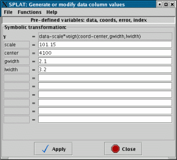
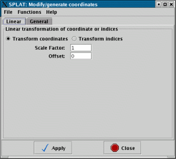
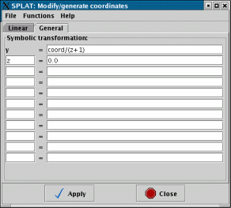

The purpose of this window is to allow you to see the actual data values of a spectrum and to make modifications to them. The spectrum being shown has it basic details at the top of the window and the values of the spectrum are shown in a table area that you can scroll.

Modifications
If you want to modify any of the values, then you need to have a spectrum that isn't readonly. Spectra read from files always have readonly values, so this will generally be the case. The simplest way to get a modifiable spectrum is to untick the Readonly control. This will make a memory copy of your spectrum, enter this on the global list and then load it into this window replacing the previous spectrum. The new spectrum will be called `Copy of <oldname>'.Note that if you want to plot this new spectrum you'll need to go back to the main window and do this yourself (plots of the spectrum that this is a copy of are not going to show any modifications that you now make!).
Editing single values
To change a single value of any kind you can now just select the table cell (usually by double clicking on it) and type in the new value. Press Return to make the edit happen (this should immediately be shown in any plots of this spectrum).
Editing whole columns
You can make global changes to a whole column of values using special dialogues that either offer special functions (linear transformations), or allow you to define an algebraic expression (in terms of the existing values or a simple index counter starting at 1 for the first row).
Editing the data values column
To apply a global edit to the data values column you need to select the Operations=>Modify data column item. This should produce a new window.

In which you can see an example expression data*scale+zero, with the scale value set to 1.0 and the zero value to 0.0. A list of preset expressions that should be generally useful is found in the Functions menu.
Naturally if you applied this expression then the data values would stay the same. A more complex example is shown next.
This presents the possibility of subtracting a single Voigt profile (the top part of this is greyed out as Voigt is a built-in function that cannot be represented as an algebraic expression).
If you need to use an expression of your own you might like to view the full list of functions that are available in the MathMap section of the KAPPA SUN. A lot of C-like intrinsics are available (abs, atan/sin/cos, tan/sin/cos, log, pow sqrt, etc.), which can operate on the data columns data, coord and error, as well as the virtual index column.
Editing the error values column
Editing the error column is much like editing the data column, except that you can actually create a new error column, see the Operations=>Modify error column item.The error column can also be deleted using the Edit=>Delete error column item.
Editing the coordinates column
Globally editing the coordinates can be done using the Operations=>Modify coordinate column window.
A simple built-in option of applying a linear transformation is offered (useful for when the coordinates are in fact some index related to wavelength). Under the General tab you can use algebraic expressions like those for modifying the data columns.
In this case the pre-defined expression for blue-shifting a spectrum in some wavelength units is shown.
Note: when you modify coordinates either singly or as a column any coordinate system information will be lost. If you want to retain this you'll either have to re-enter this information or use the conversion facilities of the Coordinate system attributes window (using this other window you can transform between apparent place, Earth to Sun to Local Group etc. and to a source rest frame that has a velocity in a given direction, so you can correct for red/blue shift that way, in fact this is the recommended way).
Undoing and redoing changes
Using the Edit menu in the main view/modify window you can undo and redo any modifications that you make to the spectrum. The changes are propagated immediately so you can see these effects in any plots of the spectrum.
SPLAT - A Spectral Analysis Tool